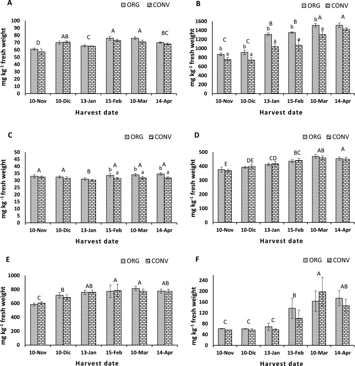

He buscat a Google acàdemic
He trobat un article escrit per Palma et al.(2023) que analitza si hi ha diferències entre la carxofa cultivada normalment o carxofa convencional i la carxofa cultivada ecològicament pel que fa el contingut de nutrients. He buscat a l'apartat resultats i poso una imatge:
En la imatge de dalt podem veure sis gràfic de barres on es compara sis polifenols, el contingut del cual es mesura en miligrams de compost polifenol per cada kilo de carxofa. A continuació podem observar al gràfic que no hi ha diferències entre els polifenols de la carxofa covencional i la ecològica. Li preguntem a chat gpt i respon: "Sí, hi ha evidències que indiquen que pot haver-hi diferències en els nivells d'àcid clorogènic entre la carxofa ecològica i la convencional. Algunes de les principals diferències són: 1. Concentració d'àcid clorogènic Carxofa Ecològica: Pot contenir nivells més alts d'àcid clorogènic. Les pràctiques de cultiu ecològic, com la rotació de cultius i l'ús de fertilitzants orgànics, poden estimular la producció de compostos antioxidants com l'àcid clorogènic. Carxofa Convencional: Pot tenir una concentració més baixa, especialment si s'han utilitzat pesticides o fertilitzants sintètics que poden interferir en la producció natural d'aquests compostos." Els compstos son: Àcid neoclorogènic (A), Àcid clorogènic (B), 1-O-àcid o cafeoylquinic (C), 3,5-O-dicafeolynquic (D), 1,5-O-dicafeoylquinic (E)apigenina-glucósido (F)